Eleven confirmed corrections
The eleven confirmed issues have been repaired and checked against their historical sources and enlarged frame previews. The two source uncertainties are retained unchanged and disclosed below. This revision is prepared for maintainer re-review.
Missing claws, feather tips and perch contact were restored from original scan pixels. Retained background fragments were removed, and the Galah’s gray paper wedge was matched to the frame paper. No bird detail was generated or repainted. Click a comparison for the full image.
Open source questions: the Yellow-faced Honeyeater’s possible rear-claw detail and the Common Myna’s leaf-or-feather detail. Both images, source masks and sizing are unchanged; those questions remain open.
Brown Thornbill
Confirmed correction completed
Original curled rear toe and twig contact restored; no detached hook remains.
Full corrected frame preview · Historical source
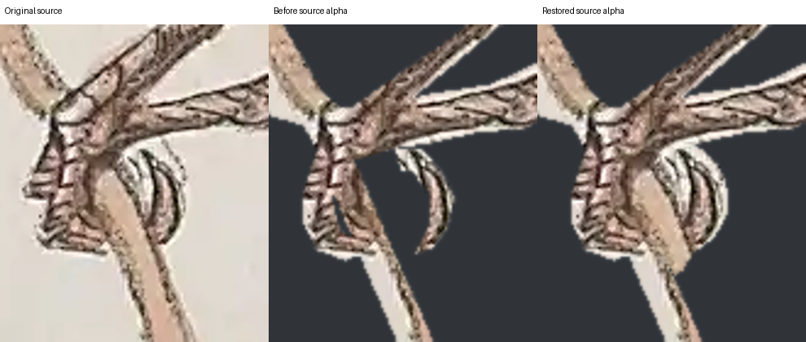
Original scan, previous cutout and restored claw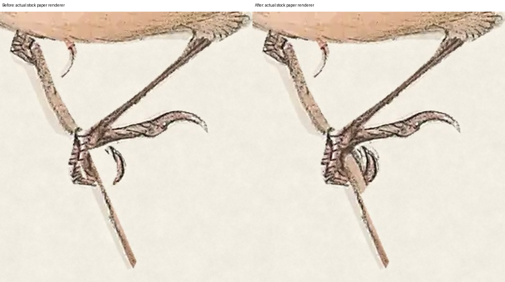
Previous and corrected frame viewRed Wattlebird
Confirmed correction completed
Original inner claw and pale tail-feather tips restored, preserving drawn outlines.
Full corrected frame preview · Historical source
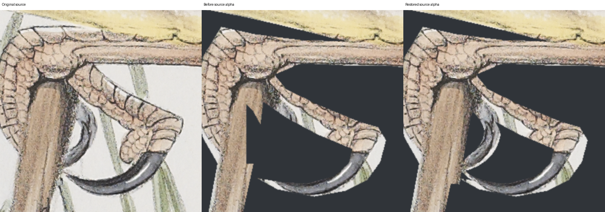
Original scan, previous cutout and restored inner claw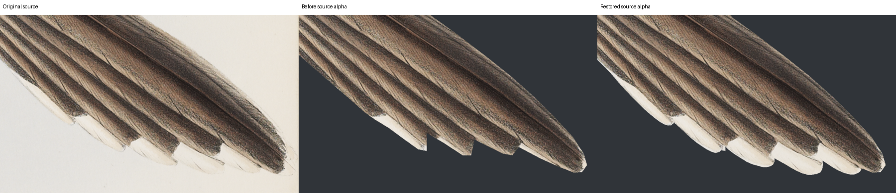
Original scan, previous cutout and restored pale feather tips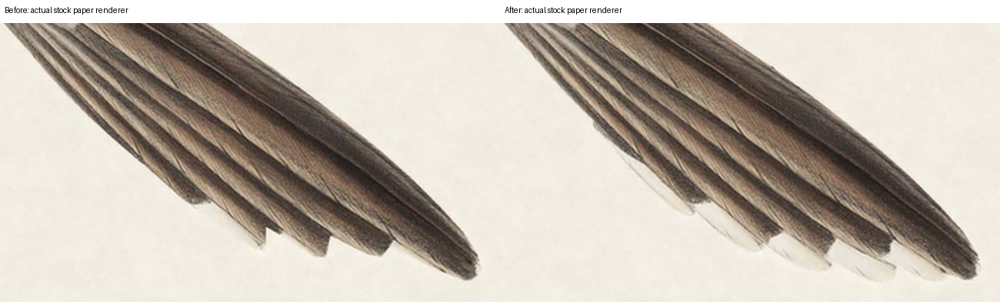
Previous and corrected tail in the frameOlive-backed Oriole
Confirmed correction completed
Both smaller hooked original claw strokes restored beside the twig.
Full corrected frame preview · Historical source
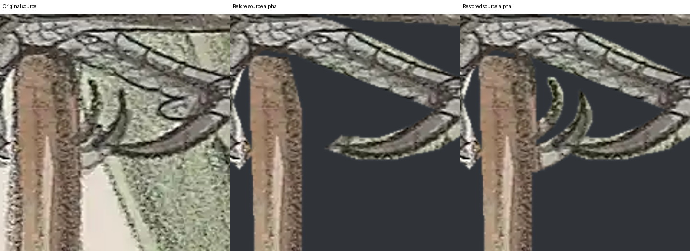
Original scan, previous cutout and restored small claws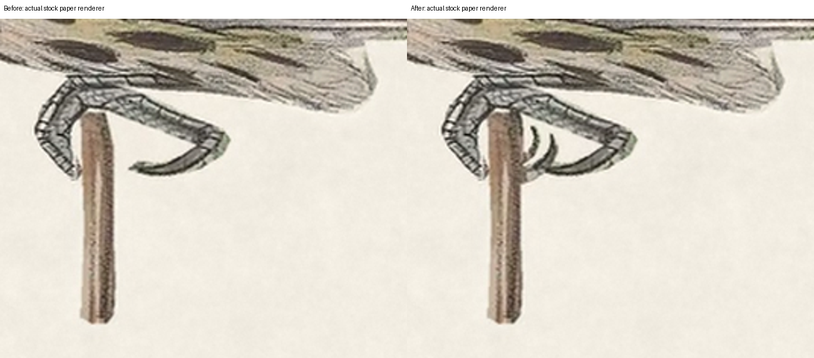
Previous and corrected frame viewAustralian Magpie
Confirmed correction completed
Foreground toe white notch replaced with exact original toe pixels; gap closed in paper render.
Full corrected frame preview · Historical source
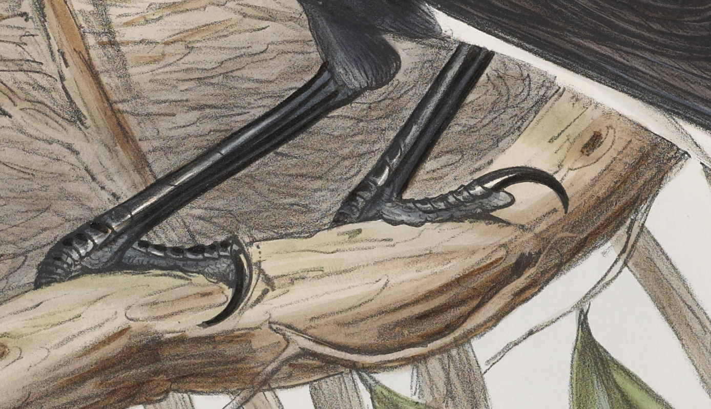
Original scan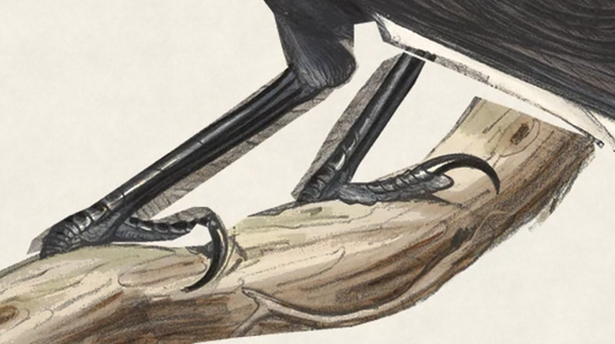
Previous frame view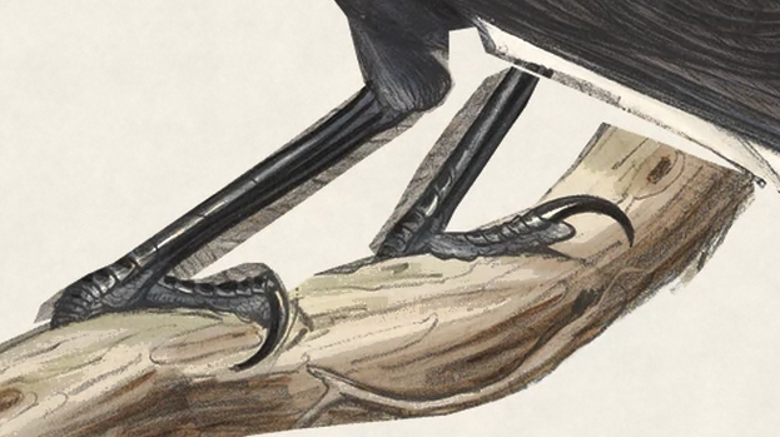
Corrected frame viewNoisy Miner
Confirmed correction completed
Original wood reconnected beneath forward claw, retaining source contact and rounded perch end.
Full corrected frame preview · Historical source
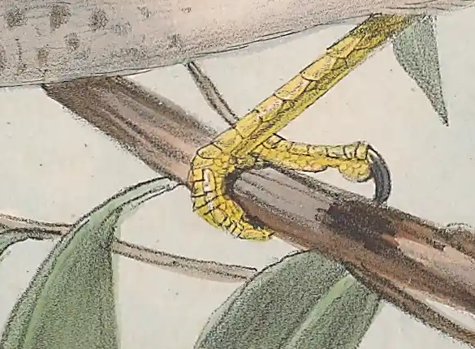
Original scan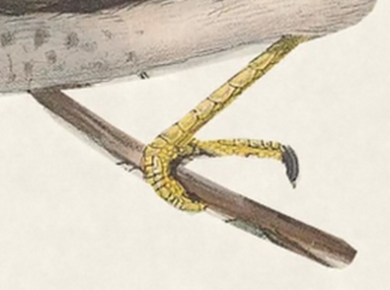
Previous frame view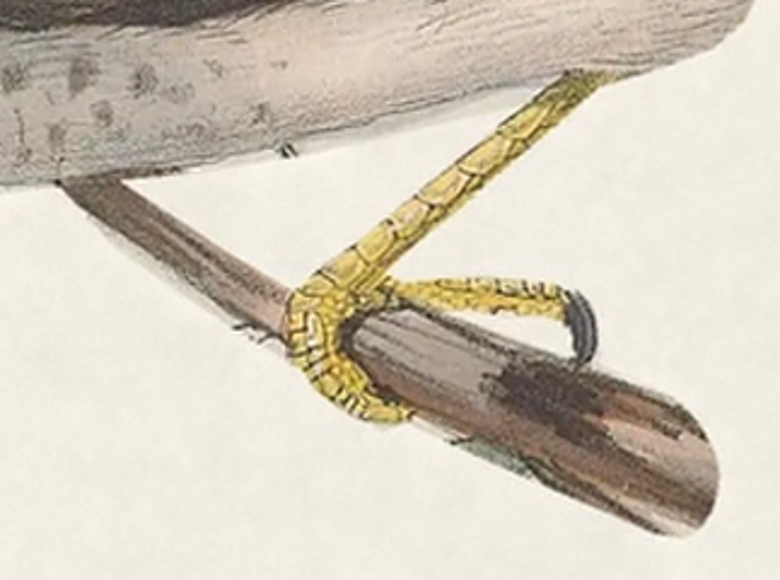
Corrected frame viewRose Robin
Confirmed correction completed
Missing original claw below the perch restored; matches source and remains connected.
Full corrected frame preview · Historical source
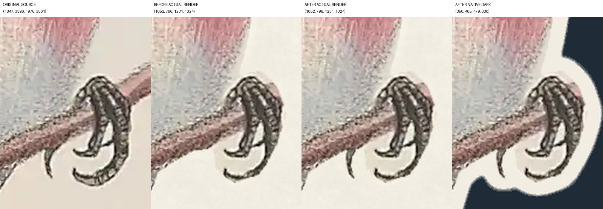
Original scan, previous frame view, corrected frame view and cutoutCrested Pigeon
Confirmed correction completed
Chest plumage restored from source; perch wood restored with a rounded source-only endpoint.
Full corrected frame preview · Historical source
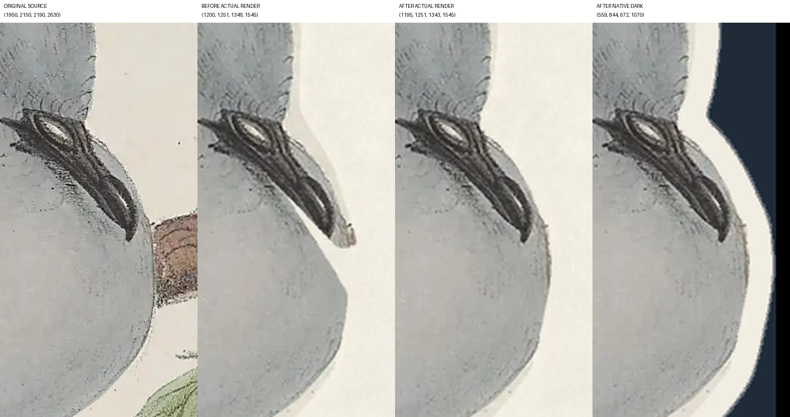
Chest: original scan, previous frame view, corrected frame view and cutout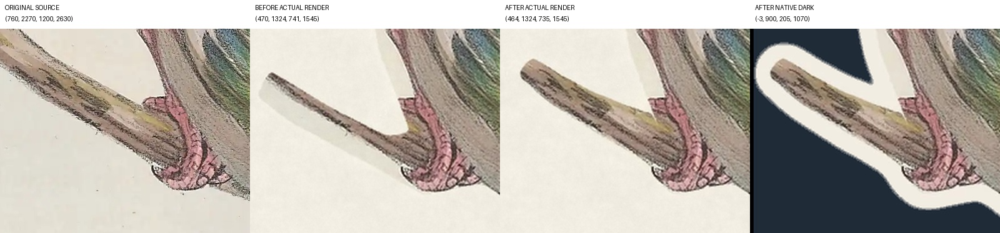
Perch: original scan, previous frame view, corrected frame view and cutoutLittle Wattlebird
Confirmed correction completed
Retained paper triangle removed; lower wing, leg and supporting branch preserved.
Full corrected frame preview · Historical source
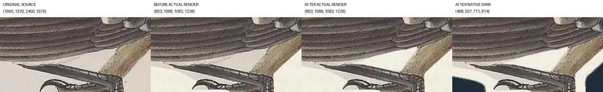
Original scan, previous frame view, corrected frame view and cutoutMagpie-lark
Confirmed correction completed
Background trunk wedge removed while belly and leg junction remain source faithful.
Full corrected frame preview · Historical source
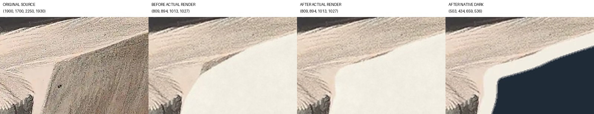
Original scan, previous frame view, corrected frame view and cutoutRainbow Lorikeet
Confirmed correction completed
Residual leaf tip removed; source toes and supporting bark preserved. Independently checked by fresh_edge_audit_b.
Full corrected frame preview · Historical source
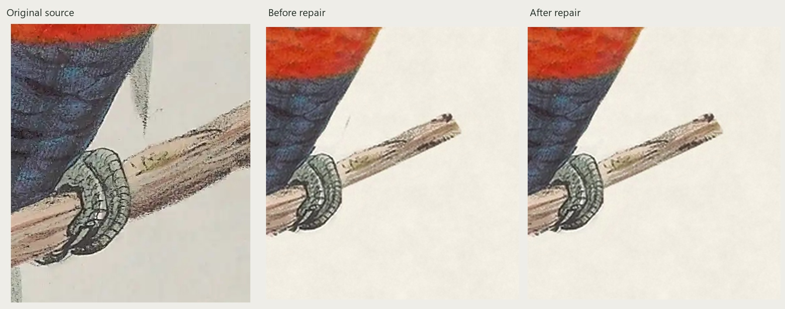
Original scan, previous view and corrected leaf-tip areaGalah
Confirmed correction completed
Broad gray paper wedge removed up to original lower feather and heel strokes; both original twig tips remain continuous. Original source master and alpha preserved.
Full corrected frame preview · Historical source
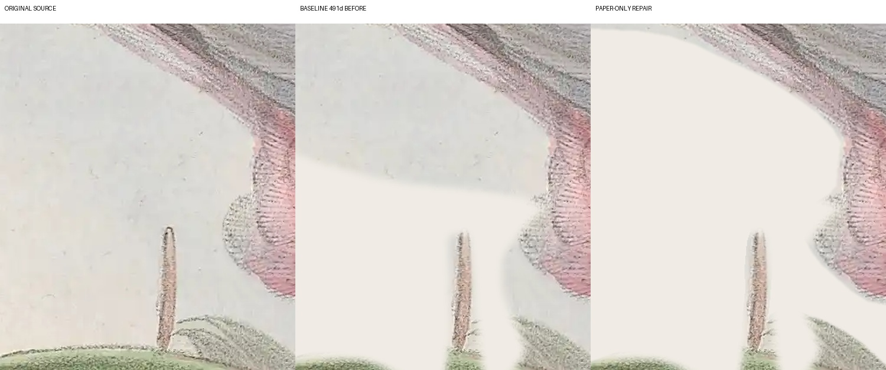
Original scan, previous paper treatment and corrected paper beside the heel and twig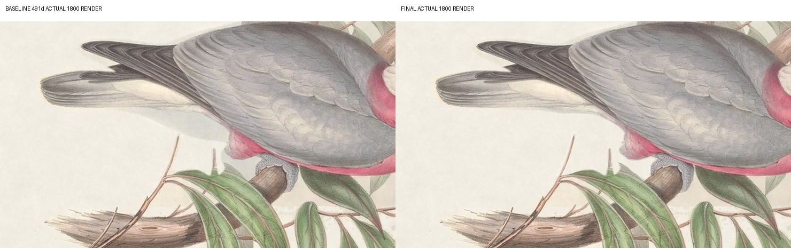
Previous and corrected frame viewAll 22 current artwork and sizing tests pass, and source, transparency and file checks pass for all twenty images. The nine images outside this correction batch are unchanged. These checks do not replace your visual review or a physical display test.